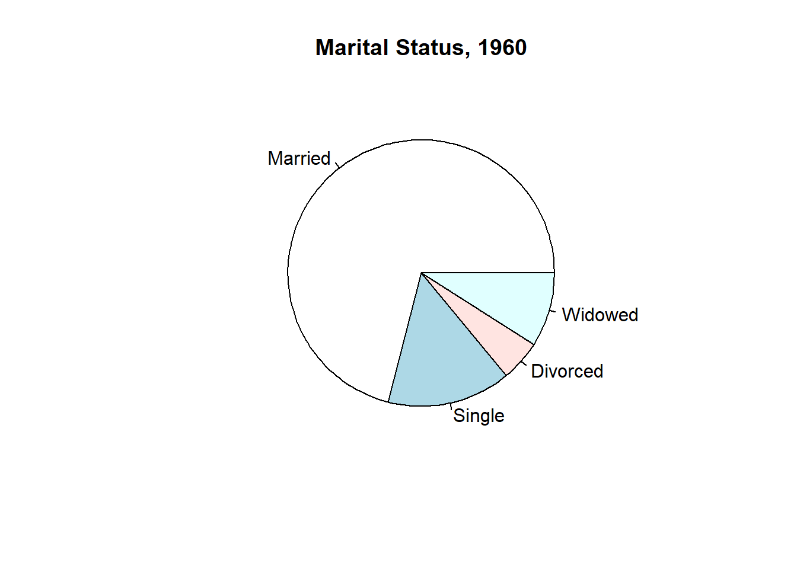
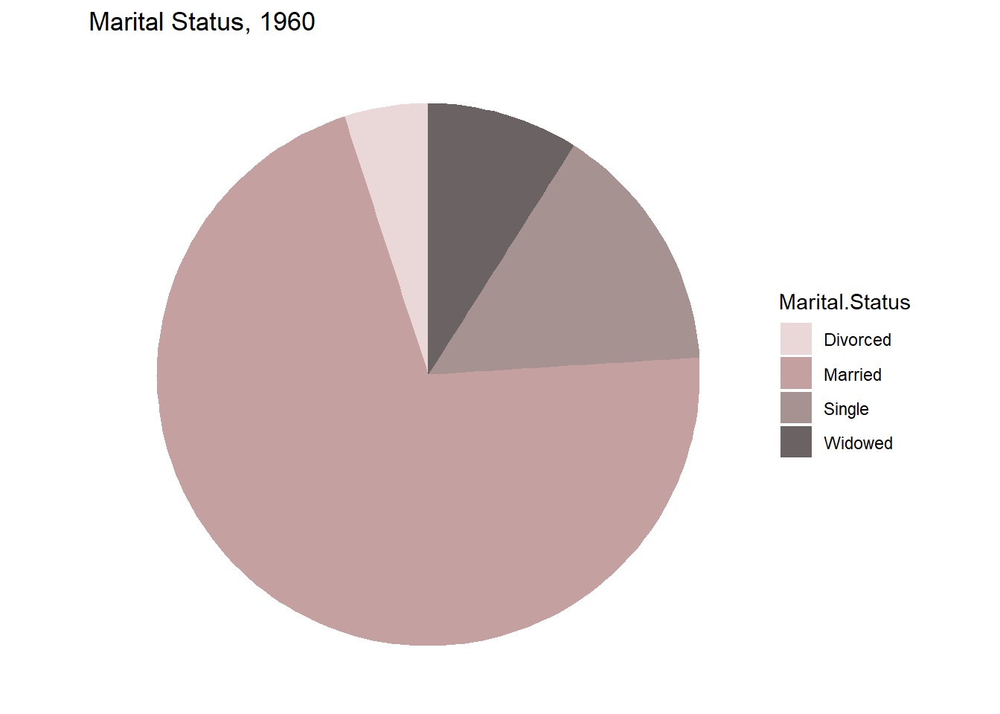
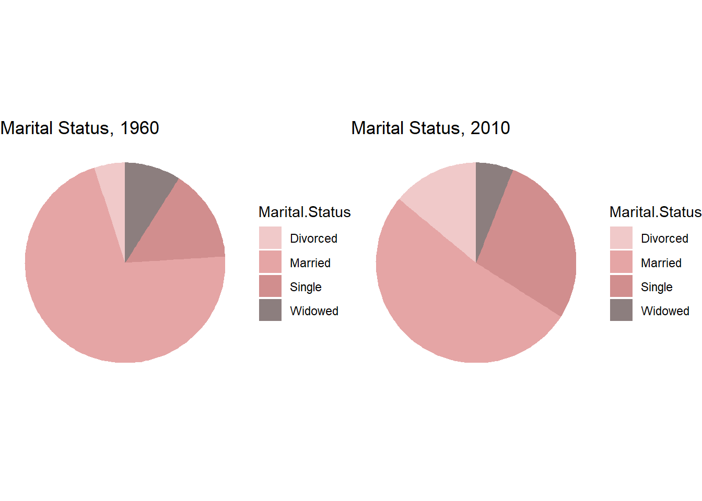
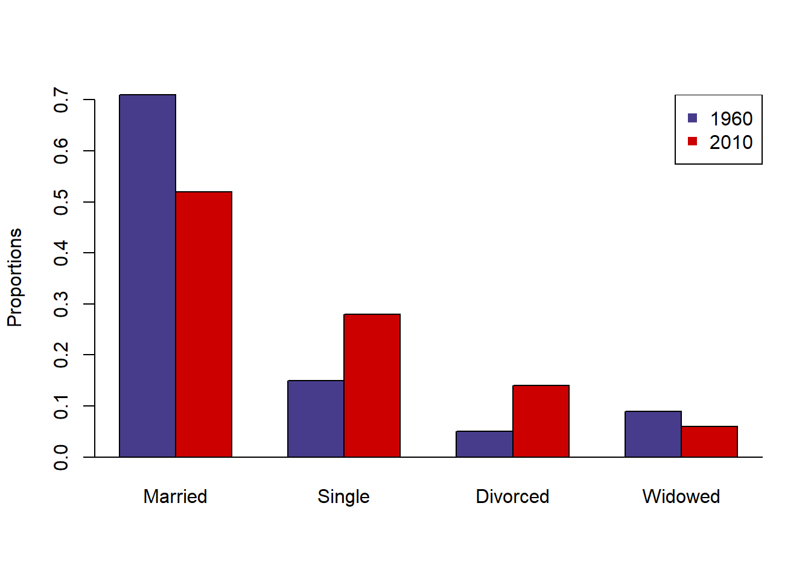
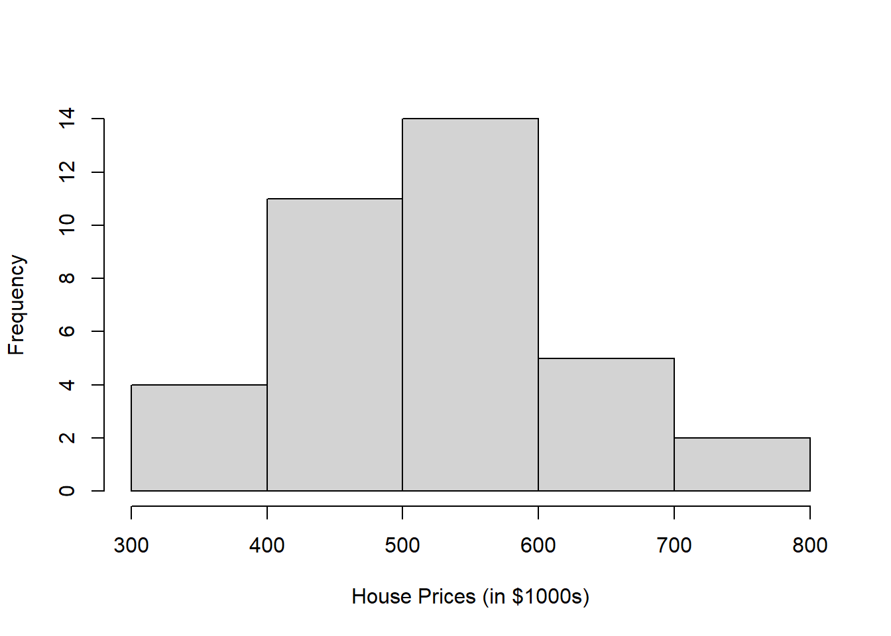
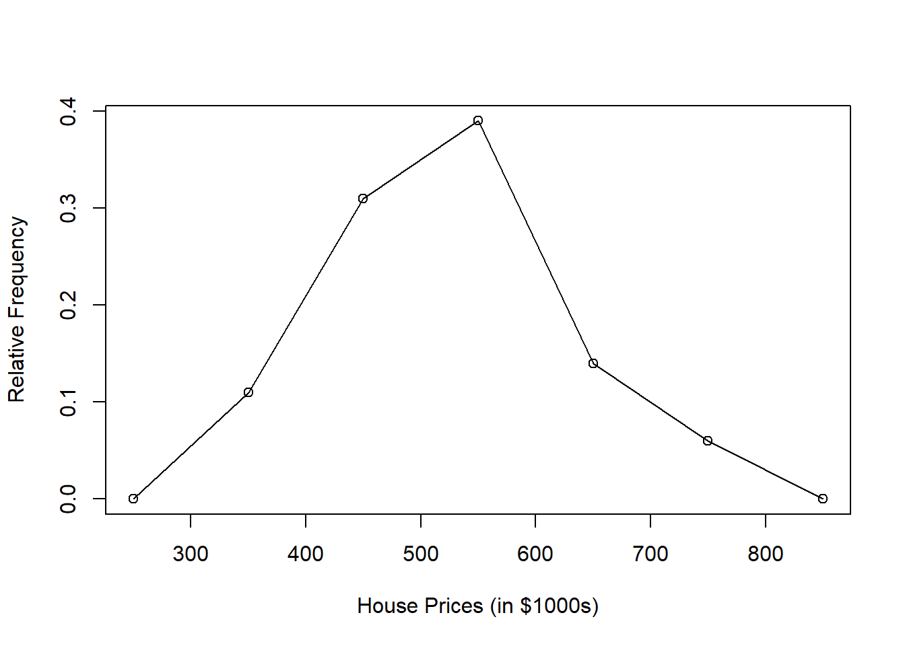
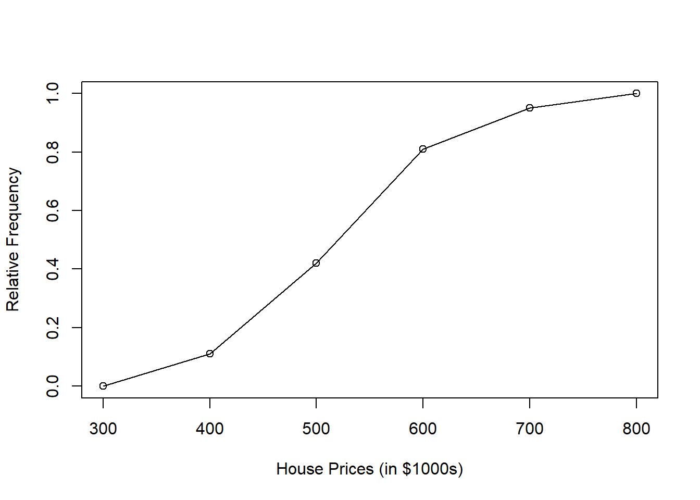
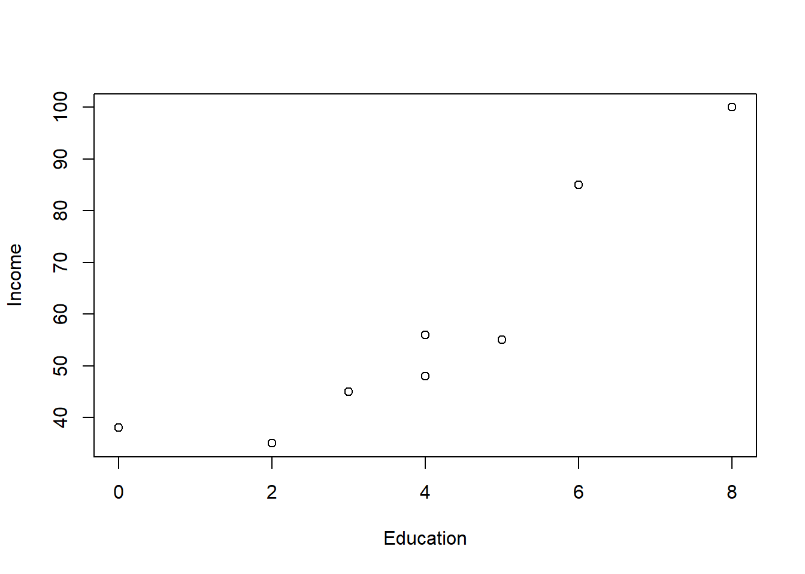

2 Chapter 2 Descriptive statistics: tabular and graphical forms
Chapter 2 - R markdown檔案 下載點
2.1 安裝並載入套件&讀檔
2.1.1 將xlsx檔案讀入為dataframe
Chapter2.xlsx 下載點
# 讀取檔案
file_path <- "D:/college information/R_statistics/Data Files/Chapter2.xlsx" # 更改成您要讀取之xlsx的路徑
sheet_name_1 <- "Marital_Status" #這裡輸入您要讀取的sheet的名稱
sheet_name_2 <- "MV_Houses" #這裡輸入您要讀取的sheet的名稱
# 使用read.xlsx函數讀取指定的工作表
marital.status.df <- read.xlsx(file_path, sheet = sheet_name_1)
mv.houses.df <- read.xlsx(file_path, sheet = sheet_name_2)## Marital.Status 1960 2010
## 1 Married 0.71 0.52
## 2 Single 0.15 0.28
## 3 Divorced 0.05 0.14
## 4 Widowed 0.09 0.06## House.Price
## 1 430
## 2 520
## 3 460
## 4 475
## 5 670
## 6 521
## 7 670
## 8 417
## 9 533
## 10 525
## 11 538
## 12 370
## 13 530
## 14 525
## 15 430
## 16 330
## 17 575
## 18 555
## 19 521
## 20 350
## 21 399
## 22 560
## 23 440
## 24 425
## 25 669
## 26 660
## 27 702
## 28 540
## 29 460
## 30 588
## 31 445
## 32 412
## 33 735
## 34 537
## 35 630
## 36 4302.2 繪製圓餅圖(Pie Chart)
2.2.1 繪製1960年婚姻狀態圓餅圖
# R語言的基本繪圖功能 -- pie()函數
pie(marital.status.df[, "1960"], # 選擇使用marital.status.df中1960年的資料繪製圓餅圖
labels = marital.status.df[, "Marital.Status"], # 選擇用來分類的feature為婚姻狀況(Marital.Status)
main = "Marital Status, 1960") # 設定圓餅圖的標題
## Warning: 套件 'ggplot2' 是用 R 版本 4.3.3 來建造的# 設置圓餅圖的顏色
colors <- c("#EAD7D7", "#C4A0A0", "#A69291", "#6B6363")
# 使用 ggplot() 函數，設置資料來源為 marital.status.df，aes() 函數設置x與y變數，以及對應到不同顏色變量的屬性
ggplot(marital.status.df, aes(x = "", y = `1960`, fill = `Marital.Status`)) +
# 使用 geom_bar() 函數繪製長條圖，設置寬度為1，stat = "identity" 表示使用資料的實際值
geom_bar(width = 1, stat = "identity") +
# 使用 coord_polar() 函數將長條圖轉換為圓餅圖，theta = "y" 表示以 y 軸為角度
coord_polar(theta = "y") +
# 使用 scale_fill_manual() 函數設置填充顏色
scale_fill_manual(values = colors) +
# 設值圓餅圖標題
labs(title = "Marital Status, 1960") +
# 將背景設定為空白
theme_void() +
# 將圖例設置在右側
theme(legend.position = "right")
2.2.2 將兩個圓餅圖放在一起比較！
## Warning: 套件 'gridExtra' 是用 R 版本 4.3.2 來建造的# 設置圓餅圖的顏色
colors <- c("#F0C9C9", "#E5A5A5", "#D18E8E", "#8C7E7E")
# 繪製1960年的圓餅圖
plot_1960 <- ggplot(marital.status.df, aes(x = "", y = `1960`, fill = `Marital.Status`)) +
geom_bar(width = 1, stat = "identity") +
coord_polar(theta = "y") +
scale_fill_manual(values = colors) +
labs(title = "Marital Status, 1960") +
theme_void() +
theme(legend.position = "right")
# 繪製2010年的圓餅圖
plot_2010 <- ggplot(marital.status.df, aes(x = "", y = `2010`, fill = `Marital.Status`)) +
geom_bar(width = 1, stat = "identity") +
coord_polar(theta = "y") +
scale_fill_manual(values = colors) +
labs(title = "Marital Status, 2010") +
theme_void() +
theme(legend.position = "right")
# 使用 gridExtra 將兩個圓餅圖合再一起
combined_plot <- grid.arrange(plot_1960, plot_2010, ncol = 2)
2.3 繪製長條圖(Bar Chart)
# R語言的基本繪圖功能 -- barplot()
# 取出我們感興趣的第二列和第三列數據，使用as.matrix()函數將這些數值保存為列形式，然後使用轉置函數t()將列轉換為行
marital.status.matrix.t <- t(as.matrix(marital.status.df[, 2:3]))
# 顯示轉置後的數據
print(marital.status.matrix.t)## 1 2 3 4
## 1960 0.71 0.15 0.05 0.09
## 2010 0.52 0.28 0.14 0.06# 使用colnames()函數為轉置後的矩陣中的每一列命名列名
colnames(marital.status.matrix.t) <- marital.status.df[, 'Marital.Status']
# 這樣轉置後的矩陣就有列名了
print(marital.status.matrix.t)## Married Single Divorced Widowed
## 1960 0.71 0.15 0.05 0.09
## 2010 0.52 0.28 0.14 0.06# 使用 barplot() 函數創建一個長條圖
barplot(marital.status.matrix.t, # 傳入的數據
beside = TRUE, # 指定條形圖是並列顯示，而不是堆疊顯示
ylab = 'Proportions', # 設定y軸標籤
col = c('slateblue4', 'red3')) # 設定不同類別的顏色，此處共設定兩種顏色
abline(h=0) # 在當前的圖形中添加一條水平於 y=0 的直線（也就是x軸）
legend("topright", c("1960","2010"), pch=15, col=c("slateblue4","red3")) # 設置圖例位置、標籤、字體大小與顏色
2.4 繪製直方圖(Histogram)
# R語言的基本繪圖功能 -- hist() 函數
hist(mv.houses.df[, "House.Price"], # 使用mv.houses.df 的 House.Price 欄位作為輸入資料
breaks = 5, # 指定直方圖中的分組數量
xlab = "House Prices (in $1000s)", # 設置 x 軸的標籤
main = NULL) # 設置圖表的標題，這裡並無設置，因此為NULL
2.5 繪製次數多邊圖(Polygon)
# 輸入中點向量和相對頻率數據
midpoint <- seq(from = 250, to = 850, by = 100)
relative.frequency <- c(0, 0.11, 0.31, 0.39, 0.14, 0.06, 0)
# R語言的基本繪圖功能 -- plot()
plot(relative.frequency ~ midpoint, # 將 relative.frequency（y 軸）繪製為與 midpoint（x 軸）的函數關係
ylab = "Relative Frequency", # 設置了 y 軸的標籤為 "Relative Frequency"
xlab = "House Prices (in $1000s)") # 設置 x 軸的標籤為 "House Prices (in $1000s)"
lines(relative.frequency ~ midpoint) # 將繪製的點進行連線
2.6 繪製累積百分比曲線圖(Ogive)
# 輸入房屋價格區間與相對頻率有關的資料
midpoint <- seq(from = 300, to = 800, by = 100)
relative.frequency <- c(0, 0.11, 0.42, 0.81, 0.95, 1) # 定義成一個向量
# R語言的基本繪圖功能 -- plot()
plot(relative.frequency ~ midpoint, # 將 relative.frequency（y 軸）繪製為與 midpoint（x 軸）的函數關係
ylab = "Relative Frequency", # 設置了 y 軸的標籤為 "Relative Frequency"
xlab = "House Prices (in $1000s)") # 設置 x 軸的標籤為 "House Prices (in $1000s)"
lines(relative.frequency ~ midpoint) # 將繪製的點進行連線
2.7 繪製散佈圖(Scatterplot)
# 輸入並且設定資料
edinc.matrix <- rbind(c(3,45),c(4,56), c(6,85), c(2,35),
c(5,55),c(4,48), c(8,100), c(0,38))
colnames(edinc.matrix) <- c("education", "income")
edinc.matrix## education income
## [1,] 3 45
## [2,] 4 56
## [3,] 6 85
## [4,] 2 35
## [5,] 5 55
## [6,] 4 48
## [7,] 8 100
## [8,] 0 38